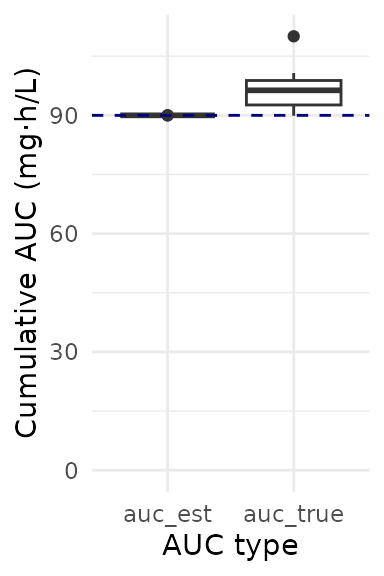

Model misspecification, a busulfan case study
busulfan_mipd.RmdIn this vignette, we will demonstrate the following tools:
- using {mipdtrial} to simulate a trial, with the trial design specified using R code.
- simulating patient PK and estimating patient PK with different models, to assess the impact of model misspecification
- using a weight-based initial dose
To account for model misspecification, we will use one model to simulate (McCune, 2014) and one model to estimate (Shukla, 2020). This is a simplified version of a published study in which we compared non-compartmental analysis (NCA) with MAP Bayesian estimation for AUC-guided busulfan dosing.
library(mipdtrial)
if(!requireNamespace("pkbusulfanmccune", quietly = TRUE)) {
PKPDsim::install_default_literature_model("pk_busulfan_mccune")
loadNamespace("pkbusulfanmccune")
}
if (!requireNamespace("pkbusulfanshukla")) {
PKPDsim::install_default_literature_model("pk_busulfan_shukla")
loadNamespace("pkbusulfanshukla")
}
# For data handling/plotting
library(dplyr)
library(tidyr)
library(ggplot2)1. Define trial design
In this simple trial, patients will be dosed once per day for four days, with 4 levels collected per day, at 3.5, 4, 6 and 8 hours post-dose. We will adjust doses 2, 3, and 4 to achieve a target cumulative AUC of 90 by t = 192 hours.
tdm_design <- create_sampling_design(
offset = rep(c(3.5, 4, 6, 8), 4),
at = rep(1:4, each = 4),
anchor = "dose"
)
target_design <- create_target_design(
targettype = "cum_auc",
targetvalue = 90 * 1000, # unit conversion
time = 192
)
update_design <- create_regimen_update_design(
at = c(2, 3, 4),
anchor = "dose",
dose_optimization_method = map_adjust_dose
)
initial_method <- create_initial_regimen_design(
method = weight_based_starting_dose,
mgkg = 3.2,
dosing_weight = "Weight", # matches column in data set
regimen = list(
interval = 24,
n = 4,
t_inf = 3,
type = "infusion"
)
)
sim_mod_design <- create_model_design(lib = "pkbusulfanmccune")
est_mod_design <- create_model_design(lib = "pkbusulfanshukla")
design <- create_trial_design(
sampling_design = tdm_design,
target_design = target_design,
regimen_update_design = update_design,
initial_regimen_design = initial_method,
sim_design = sim_mod_design,
est_design = est_mod_design
)2. Create a set of digital patient covariates
We will create an example data set of 10 individuals originally drawn from the NHANES data set. This data set was created from survey data collected by the US National Center for Health Statistics from a general sampling of the US population, and is available in the NHANES R package.
dat <- data.frame(
ID = 1:10,
Gender = c(1, 1, 0, 1, 1, 0, 1, 1, 1, 0),
Age = c(34L, 4L, 49L, 9L, 8L, 45L, 66L, 58L, 54L, 10L),
Weight = c(87.4, 17, 86.7, 29.8, 35.2, 75.7, 68, 78.4, 74.7, 38.6),
Height = c(164.7, 105.4, 168.4, 133, 130.6, 166.7, 169.5, 182, 169.4, 141.8)
)The next step is to make sure we have all the covariates we need. Busulfan has a known time-dependent relationship with clearance, and so the McCune model takes a covariate that indicates at what time this relationship should start (T_CL_EFF; useful for test doses that should not impact busulfan clearance). We will set this to zero for all patients. The Shukla model also takes conditioning regimen as a covariate, since co-medication with Clofarabine and Fludarabine was associated with a change in clearance (REGI). We will also set this to zero for all patients.
Other models might require fat-free mass or other calculated covariates. This would be a good time to do that sort of processing on your data set!
You may also need to convert between units (height in m to cm, for example.)
dat$T_CL_EFF <- 0
dat$REGI <- 0Here are the first few rows of our data set:
head(dat)
#> ID Gender Age Weight Height T_CL_EFF REGI
#> 1 1 1 34 87.4 164.7 0 0
#> 2 2 1 4 17.0 105.4 0 0
#> 3 3 0 49 86.7 168.4 0 0
#> 4 4 1 9 29.8 133.0 0 0
#> 5 5 1 8 35.2 130.6 0 0
#> 6 6 0 45 75.7 166.7 0 0We also need to link the covariates in our data set to the covariates expected in the model:
-
To check which covariates are required for your models use
PKPDsim::get_model_covariates():unique( c( PKPDsim::get_model_covariates(sim_mod_design$model), PKPDsim::get_model_covariates(est_mod_design$model) ) ) #> [1] "AGE" "WT" "HT" "SEX" "T_CL_EFF" "REGI" -
To check which covariates are in your data set use
colnames():colnames(dat) #> [1] "ID" "Gender" "Age" "Weight" "Height" "T_CL_EFF" "REGI"
cov_map <- c(
AGE = "Age",
WT = "Weight",
HT = "Height",
SEX = "Gender",
T_CL_EFF = "T_CL_EFF",
REGI = "REGI"
)3. Simulate a trial!
Each patient will start at a dose of 3.2 mg/kg body weight. We will
then use mipdtrial::dose_grid_search to optimize doses to
attain a target of 90 mg*h/L.
For inter-individual variability terms, we will use the inter-individual variability described by our “true” model, since this should reflect the “true” distribution in patient pharmacokinetics. Later, we will estimate the individual PK parameters using our estimation model and the measured TDMs we “collect”.
For residual error terms, we will use the residual error of our “true” model, since this is supposed to reflect the “true” unexplained error (assay error, etc.). This function creates a data frame of error to add to each “true” simulated concentration to produced a measured therapeutic drug monitoring sample.
Here are the first few rows of our simulation results:
head(res$final_exposure)
#> id auc_true auc_est tta target_index
#> 1 1 93148.57 90000 NA 1
#> 2 2 110043.02 90000 NA 1
#> 3 3 92196.50 90000 NA 1
#> 4 4 100731.06 90000 NA 1
#> 5 5 92462.25 90000 NA 1
#> 6 6 95373.36 90000 NA 16. Analyze results
How well did our patients get to target? It looks like we estimated that target attainment would be very high (all patients have an AUC very close to 90 mg*h/L), but “true” AUC was higher than that due to some model misspecification!
res$final_exposure %>%
pivot_longer(
c(auc_true, auc_est),
names_to = "auc_type",
values_to = "auc"
) %>%
ggplot() +
aes(x = auc_type, y = auc/1000) +
geom_boxplot() +
geom_hline(yintercept = 90, color = "navyblue", linetype = "dashed") +
scale_y_continuous(limit = c(0, NA)) +
theme_minimal() +
labs(
y = "Cumulative AUC (mg\u00B7h/L)",
x = "AUC type"
)
Even with some model misspecification, target attainment (within 20% of target AUC) was still high:
target_attainment <- res$final_exposure %>%
mutate(
ontarget = is_on_target(auc_true, target_design)) %>%
summarize(proportion_ontarget = mean(ontarget)) %>%
pull(proportion_ontarget)
target_attainment <- paste0(round(100 * target_attainment), "%")Overall, 90% of patients had a “true” AUC of 90 mg*h/L.
For an in-depth analysis of how differences between these two models impact target attainment, see Hughes et al., J PKPD (2024)